27
Multi-Technology Designs and Locally Scoped Models and Options
You can use multi-technology simulation (MTS) when designing high-speed interfaces between integrated circuits (ICs) to see the effects of signals traveling between two or more chips. You can also use MTS for custom IC system-in-package (SiP) designs. SiP designs are fully functional systems or subsystems in an IC package. MTS allows you to combine passive components with ICs fabricated using different process technologies while minimizing parasitic loading.
Your MTS design must consist of a top-level schematic that contains two or more blocks, each with its own associated set of process definitions, model libraries, simulation states, and other setup files. You cannot use MTS with a non-hierarchical schematic because each different technology must be self-contained. You must instantiate device instances from different technologies in different cell views so that the program can map model information appropriately.
- Different MTS setups can be stored for different tests.
-
MTS settings are saved in the ADE test setup with the maestro view. If any existing MTS settings are found in the config view, they are automatically migrated to the ADE view and removed from the config view provided that the
MTSremoveOldConfigSetupAfterMigrationenvironment variable is set totrue. -
You can setup MTS options only when the design in your test is a config view. If you change the design to a schematic, the MTS settings are not retained even if the
asimenv.retainStateSettingsenvironment variable is set to eitherdesign,all, oryes. - If you change the simulator, the MTS settings are disabled. To enable the MTS settings again, open the MTS Options form and select the Enable locally scoped models and options (MTS) check box.
Related Topics
Enabling Locally Scoped Models and Options
Enabling Local Scoping for a Cell
Specifying Locally Scoped Models for a Cell
Specifying Local Simulator Options for a Cell
Enabling Local Scoping for an Instance
Specifying Locally Scoped Models for an Instance
Specifying Local Simulator Options for an Instance
Enabling Locally Scoped Models and Options
To enable MTS options in your test setup, do the following:
-
In the Data View assistant, right-click the test or analysis name, and then choose MTS Options.
The MTS Options form appears.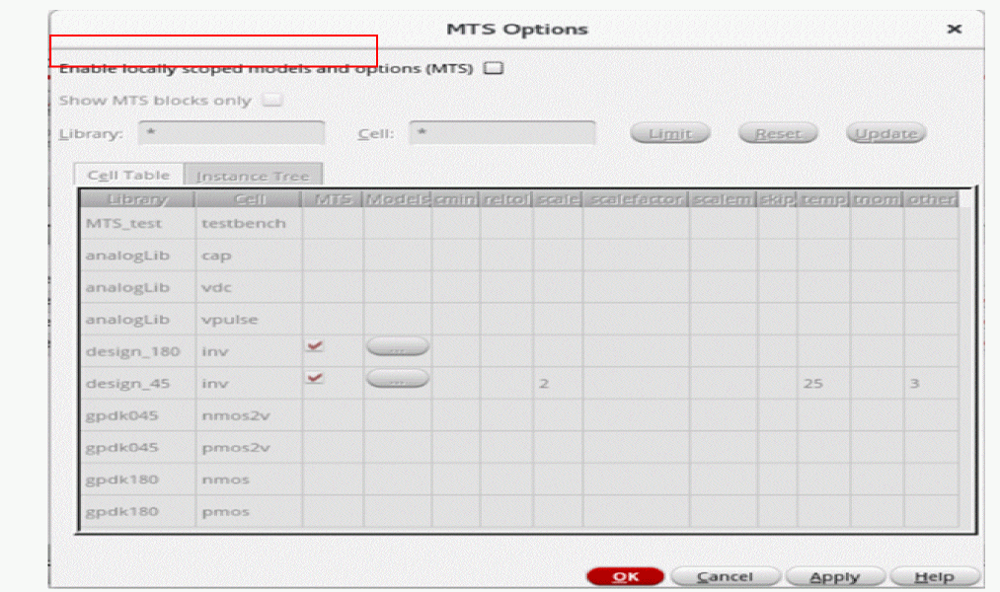 -
Select the Enable Locally scoped models and options (MTS) check box to enable the MTS options for the selected test.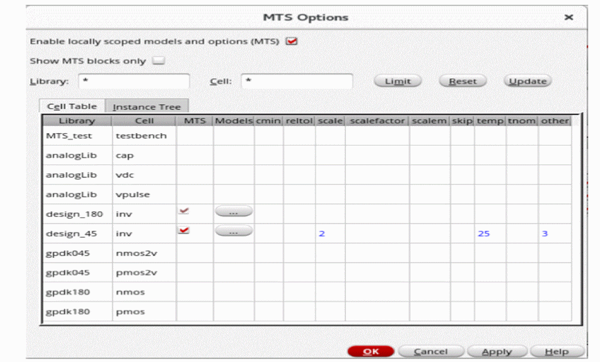
- Click OK to save the changes.
After enabling the MTS options in your test setup, you can enable local scoping at the following levels in your design hierarchy:
Important Points to Note
- For Spectre, AMS, and UltraSim simulators, local scoping can be enabled at both these levels– the cell and instance levels.
- For third-party simulators, you cannot enable MTS options in your test setup.
Enabling Local Scoping for a Cell
To enable local scoping for a cell, do the following:
- In the MTS Options form, click the Cell Table tab to view a list of the library and cells in your test setup.
-
Click the check box in the MTS column for the cell that you want to enable for local scoping, as shown in the following figure.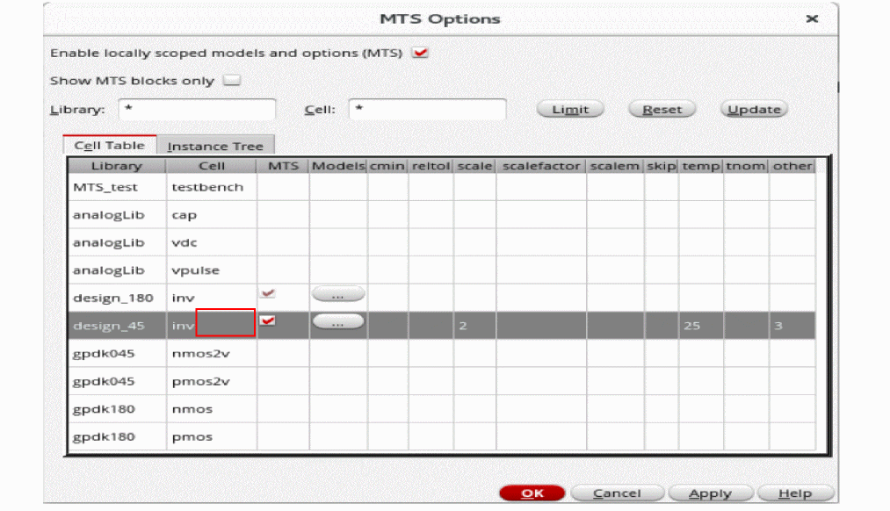
-
Click OK to save the changes.
The selected cell is now enabled for local scoping.
You can now specify the model libraries that will be locally scoped at the selected cell. See the Specifying Locally Scoped Models for a Cell section for more information.
You can also specify various process parameters that you want to include locally in the simulation. See the Specifying Local Simulator Options for a Cell section for more information.
Specifying Locally Scoped Models for a Cell
To specify the models that will be locally scoped at the cell level, do the following:
-
On the Cell Table tab, in the row for the cell for which you have enabled local scoping, click the ellipsis (...) button the Models column, as shown in the following figure.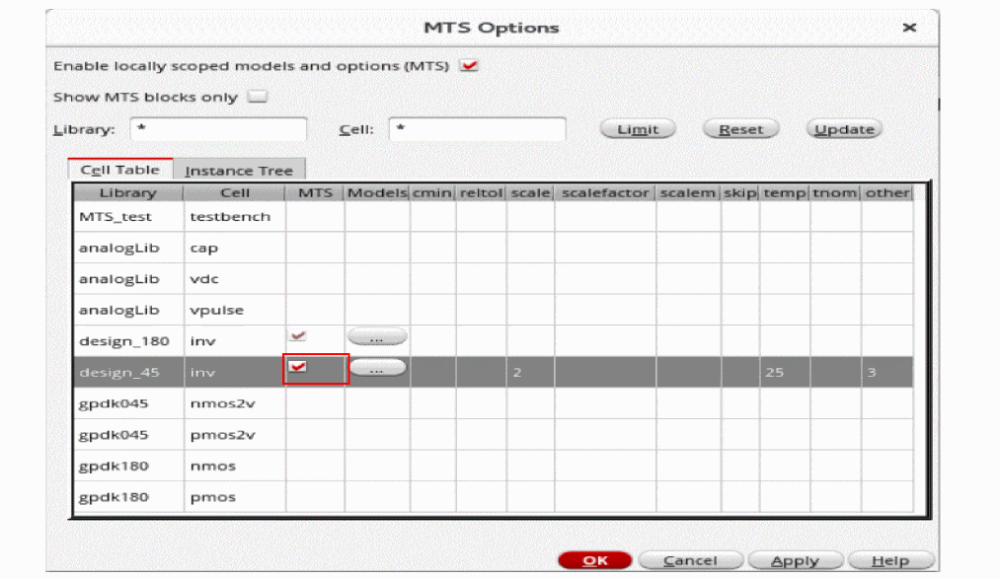The Model Library Setup form appears, as shown in the following figure.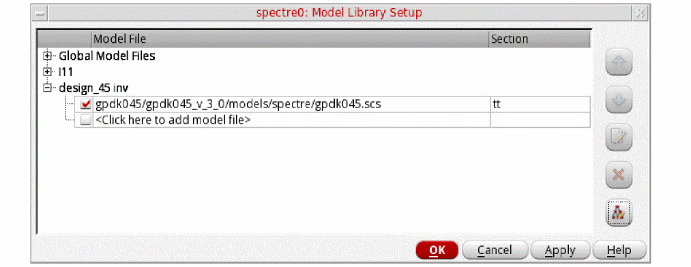
- Follow the instructions described in the “Specifying Model Libraries” section to select the model files.
Specifying Local Simulator Options for a Cell
To specify the various process parameters, such as tnom, scale, scalefactor, temp, and scaleem, that you want to include in the simulation for a cell, do the following:
-
On the Cell Table tab, click in the column for the simulator option you want to specify, and then type a value.
The following figure shows an example where the local simulator options,scaleandtemp, are specified for theinvcell.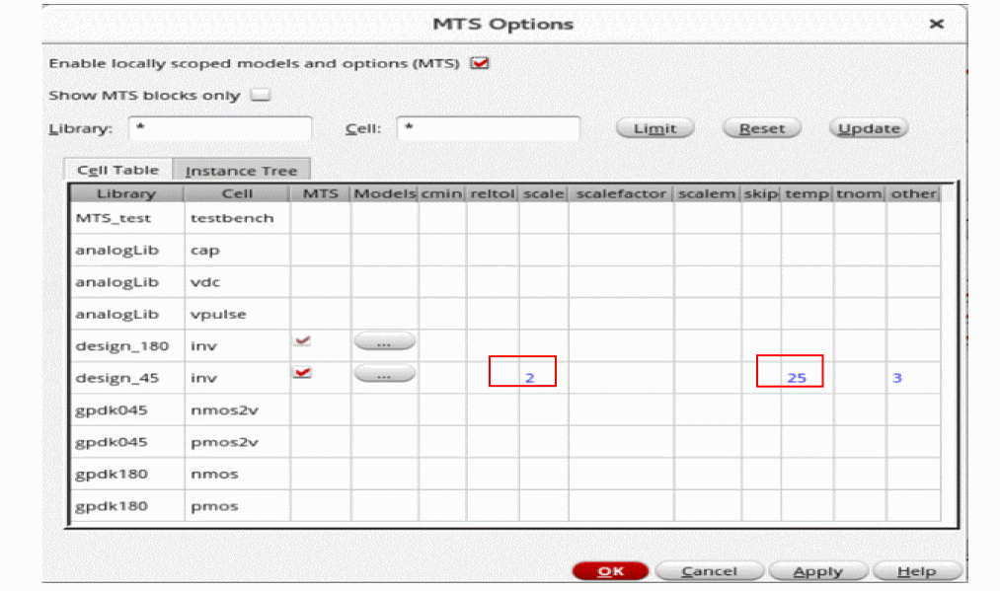 - Click OK to save the changes.
Important point to note:
-
All the options marked with an asterisk (*) in the Spectre help (
spectre -help options) are available as columns, such as,reltol,tnom, andscaleem, in the MTS Options form. If you want to include these options in the simulation locally, you can specify their values in the respective columns. -
In addition to the currently supported local options, if Spectre supports new local options in future, you can include them too in the simulation locally by specifying their values in the
othercolumn.
Enabling Local Scoping for an Instance
To enable local scoping for an instance, do the following:
-
In the MTS Options form, click the Instance Tree tab to view an alphabetical list of the instances available in your design.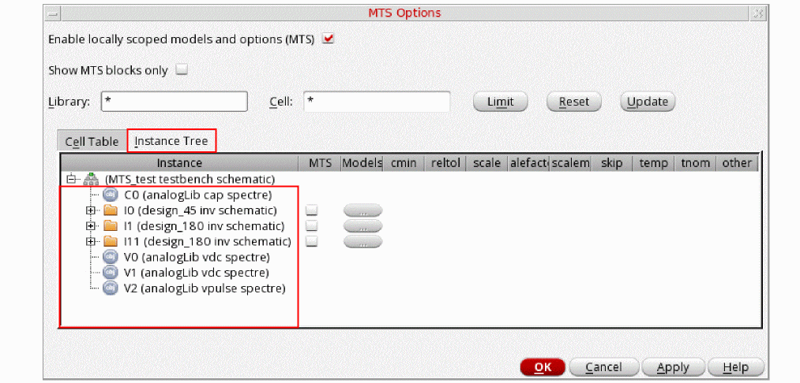
-
Select the check box in the MTS column for the instance that you want to enable for local scoping.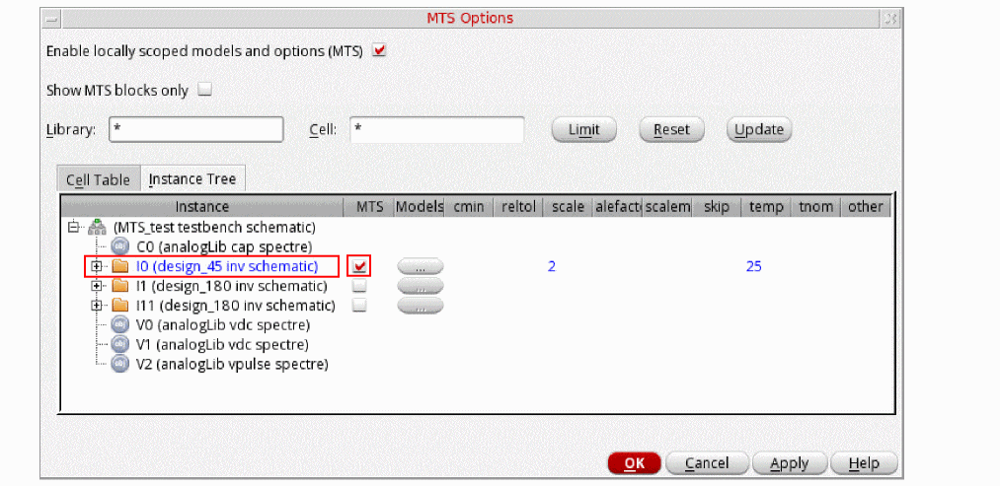
-
Click OK to save the changes.
You can now specify the model libraries that will be locally scoped for the selected instance. See the Specifying Locally Scoped Models for an Instance section for more information.
You can also specify various process parameters that you want to include locally in the simulation. See the Specifying Local Simulator Options for an Instance section for more information.
Specifying Locally Scoped Models for an Instance
To specify the models that will be locally scoped for an instance, do the following:
-
On the Instance Tree tab, click the ellipsis (...) button in the Models column for the instance that is enabled for local scoping, as shown in the following figure. Such instances appear in blue.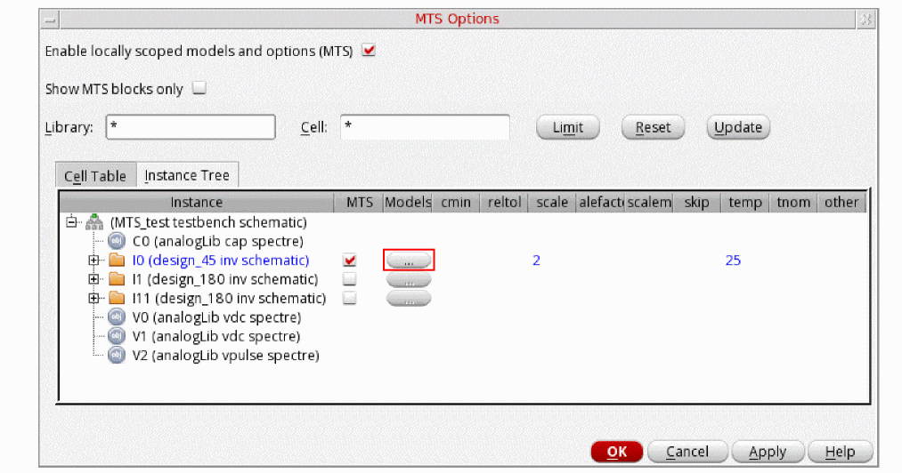The Model Library Setup form appears, as shown in the following figure.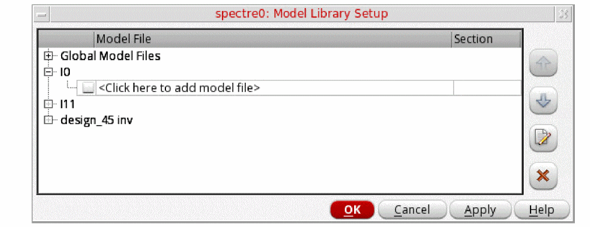
- Follow the instructions described in the Specifying Model Libraries section to select the model files.
Specifying Local Simulator Options for an Instance
To specify the various process parameters, such as tnom, scale, scalefactor, temp, and scaleem, that you want to include in the simulation for an instance locally, do the following:
-
On the Instance Tree tab, click in the column for the simulator option you want to specify, and then type a value.If the local simulator options are specified at the cell level, they are copied to the instances from their cells, provided that the local scoping is enabled at both the cell and the instance levels.The following figure shows an example where the local simulator option,
tnom, is specified at theI0instance andscaleandtempare copied from theinvcell that contains theI0instance in the design hierarchy.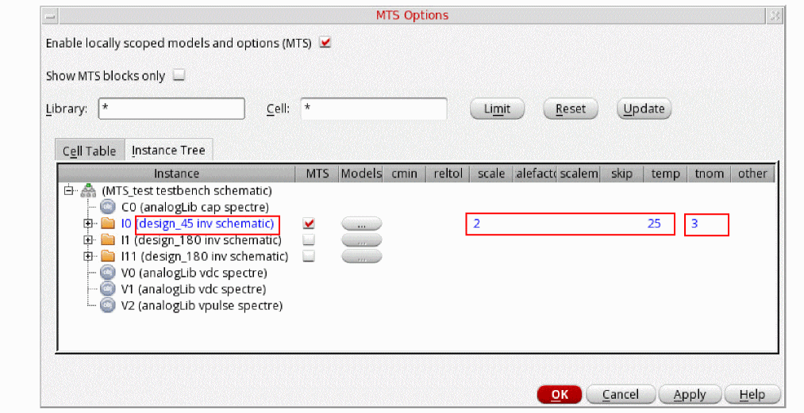 - Click OK to save the changes.
Disabling Local Scoping
Perform the following steps to disable local scoping for a cell or an instance:
- In the MTS Options form, on the Cell Table tab or the Instance Tree tab, deselect the MTS check box next to a cell or an instance for which you want to disable the local scoping.
Important Point to Note
You cannot disable the local scoping for a cell if the local scoping is enabled for any of its instances. For such library cells the MTS check box appears dimmed and cannot be deselected.
In the following example, a side-by-side view of the Cell Table and Instance Tree views is shown.
Limiting the View by Library or Instance
You can limit what appears on the MTS Options form by library name, cell name, or both.
To limit the view of design components on the MTS Options form to only those in a particular library or set of libraries, do the following:
- In the Library field, type a filtering string.
-
Click Limit.
Only those design libraries that match the filtering string are displayed in the MTS Options form.
To limit the view of design components on the MTS Options form to a particular cell or set of cells, do the following:
- In the Cell field, type a filtering string.
-
Click Limit.
Only those cells that match the filtering string are displayed in the MTS Options form.
To limit the view by library name and by cell name, do the following:
- In the Library field, type a filtering string.
- In the Cell field, type a filtering string.
-
Click Limit.
Only those cells that match the filtering string in the Cell field contained in those libraries that match the filtering string in the Library field are displayed in the MTS Options form. - Select the Show MTS blocks only check box to display only MTS blocks in the Cell Table and Instance Tree tabs. The MTS blocks are indicated with a check mark in the MTS column of the Cell Table and Instance Tree.
- Click the Reset button to clear the filtering and show all libraries and cellviews.
- Click the Update button view only the blocks that are selected as MTS blocks.
Specifying Test and Block Information when Adding Model Files to Corners
To specify a particular test to which you want to apply a model file or a particular section of a model file when
-
Follow the instructions for adding model files to corners but do not click OK.
The model file you added appears on the Add/Edit Model Files form.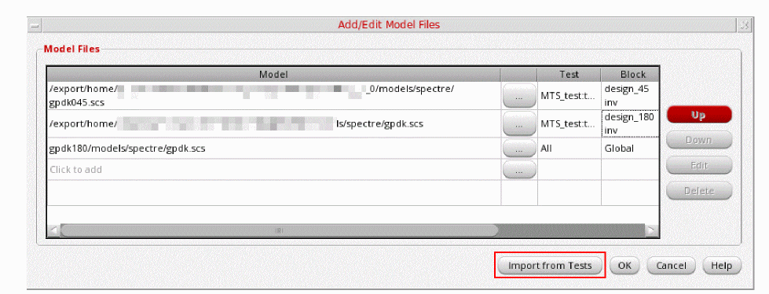 -
In the Test column, double-click and, from the drop-down menu, select a particular test for which you want to use the model file.
By default, the program uses the model file for all tests. -
In the Block column, double-click and, from the drop-down menu, select a particular cell or instance which you want to apply the model file.
By default, the program uses the model library for the entire design: Global. - Click OK.
Detecting Context Symbol/Name Collisions
As a context developer, you need to check for conflicts that arise when you define a function or variable in more than one context (name collisions).
To check for name collisions in loaded contexts, do the following:
-
In the CIW, choose Tools – Conversion Tool Box.
The Conversion Tool Box appears. -
Click Check SKILL Name Conflicts.
The SKILL Name Checker form appears.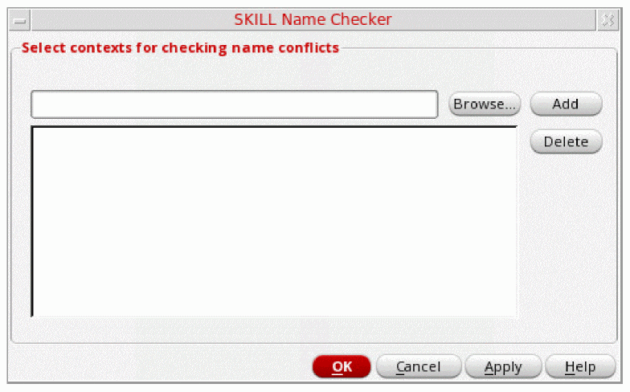 -
Click Browse.
A browser window appears. - For each context file you want to add to the check, do the following:
-
On the SKILL Name Checker form, click OK.
Duplicate definitions appear in the SKILL Name Checker Results window as follows:symbol '
where functionName is the name of the function and contextName is the first context in which the program found functionName.functionNamealready defined by context "contextName"
Multi-Technology Simulations Using DSPF File
Consider that your design has two blocks, A and B designed with different process technologies. The block B further contains blocks, C, D, and E inside it. You have enabled local scoping at the cell level for the block B.
Now, if you want to run a multi-technology simulation only for the sub-block C of the block B, along with the block A, you first need to create a .scs file for the block C with the following contents:
//DSPF File
include "<path to model file>" section=tttt
dspf_include "<path to the spf file of the block C>" extra_port=true bus_delim="<> []"
You then have to include this .scs file instead of the model file in the MTS Options form before running the multi-technology simulation.
Return to top